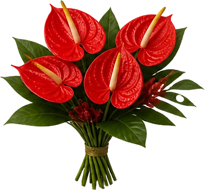
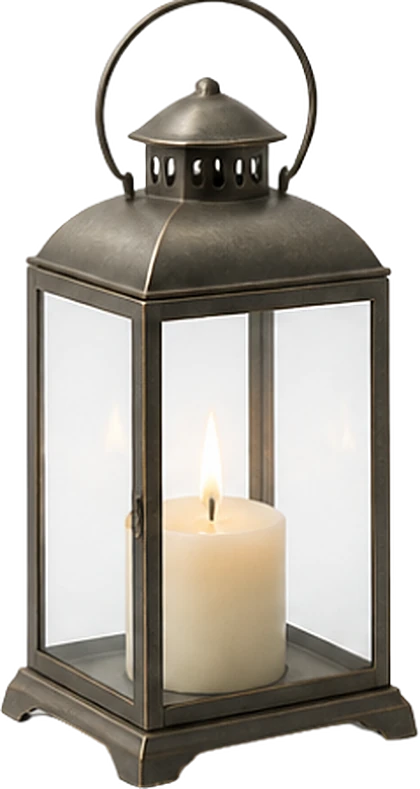

Maëlle & Jordan Le programme Samedi 22 mai 2027
16 h 00 Il était une fois : la cérémonie
17 h 00 « Krik ? Krak ! » : contes et devinettes pour petits et grands

18 h 00 Cocktail au jardin parmi les anthuriums

19 h 30 Dîner aux lanternes
21 h 30 Bal au son des tambours
23 h 00 Gâteau des mariés
Jardin créole Tenue Jardin créole
Rouge hibiscus, bleu des Caraïbes, jaune soleil, blanc. Une touche créole est la bienvenue pour celles et ceux qui le souhaitent, sans aucune obligation.
Une surprise Grattez le médaillon du bout du doigt
×
Kreyòl : faire-part de mariage haïtien
« Krik ? » demande le conteur, « Krak ! » répond l'assemblée : en Haïti, c'est ainsi que commencent les contes, le soir, quand la famille est réunie. La collection Kreyòl reprend cette tradition orale pour raconter votre mariage comme une histoire qu'on se transmettra.
Un livre de contes s'ouvre, une case créole en papier se déplie, des anthuriums encadrent vos prénoms : une invitation pensée pour un mariage au bord de la mer, en créole haïtien ou en français.
Ce que comprend l'invitation
Le faire-part animé, qui s'ouvre en musique ; le save-the-date ; le site du mariage, avec le programme, le lieu, l'hébergement et les réponses ; le plan de table ; le mur photo et le livre d'or. Chaque invité reçoit son lien sur WhatsApp, ne voit que les cérémonies où il est attendu et répond dans sa langue. Vous ne payez qu'au moment d'envoyer le lien.
La collection Kreyòl · Toutes nos invitations pour un mariage haïtien · Créer mon espace
Démonstration : couple, prénoms et lieux fictifs.